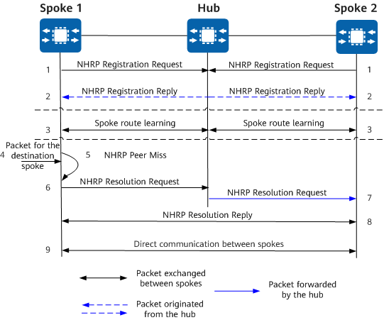
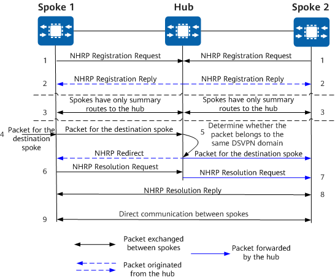

DSVPN Fundamentals
DSVPN helps branches dynamically establish VPN tunnels in two scenarios: non-shortcut scenario for small and midsize networks and shortcut scenario for large networks.
Route deployment varies according to the scenario:
Non-shortcut scenario: Spokes learn routes from each other.
By learning each other's routes, a spoke has an individual route for the remote network behind each destination spoke, with the destination spoke's tunnel address as the next hop. The non-shortcut scenario is suitable for small and midsize networks. It has low requirements on the performance of hub and spoke devices, because spokes only have to learn a small number of routes.
Shortcut scenario: Spokes save only summary routes to the hub.
One disadvantage of the non-shortcut scenario is that each spoke must have all of individual routes in its routing table for all possible destination networks. Computing dynamic network-wide routes consumes lots of CPU and memory resources at spokes and puts a significant strain on their routing tables and performance. The shortcut scenario compensates for this shortcoming, and is ideal for large networks with many branches. On a DSVPN network deployed in shortcut mode, spokes save only summary routes to the hub. In this way, the hub's tunnel address is the next hop for any spoke to reach any network behind a spoke.
DSVPN Fundamentals in a Non-Shortcut Scenario
Route Deployment
In a non-shortcut scenario, spokes set up tunnels between each other for direct communication. The next-hop address of a route from a spoke to another spoke's subnet is the tunnel address of the destination spoke. Spokes can learn routes from each other in the following ways:
Static route configuration
Each spoke has static routes configured to reach subnets behind all other spokes, with the destination spoke's tunnel address as the next hop.
Dynamic routing protocol
DSVPN supports OSPF and BGP. They both can implement subnet route learning between spokes and between the hub and spokes. With a dynamic routing protocol configured at the hub and spokes, spokes can learn routes from each other through the routing protocol.
After route learning, each spoke has routes to subnets behind all other spokes.
Principles
Devices on a DSVPN network use NHRP to dynamically obtain a peer's dynamic public address. In a non-shortcut scenario, DSVPN works as follows.
Figure 1 How DSVPN works in a non-shortcut scenario
As shown in
Figure 1:
- The network administrator manually specifies the hub's public and tunnel addresses at each spoke. All spokes on the network send NHRP Registration Request messages to the hub.
- The hub generates NHRP mapping entries for all spokes based on the received requests and sends NHRP Registration Reply messages to the spokes.
- Spokes learn subnet routes from each other either through static route configuration or a dynamic routing protocol. The destination spoke's tunnel address is the next hop of such a route.
- When a spoke needs to send a data packet to another spoke, it looks for the next hop's public address. The next hop here is the destination spoke's tunnel address.
- If the source spoke does not know this public address, it sends an NHRP Resolution Request message to the hub.
- The source spoke sends an NHRP Resolution Request message to the hub to request the public address mapping the destination spoke's tunnel address.
- After the NHRP Resolution Request message arrives at the hub, the hub forwards the message to the destination spoke.
- In response to the received NHRP Resolution Request message, the destination spoke sends an NHRP Resolution Reply message to the source spoke.
- The two spokes can then directly communicate. That is, spoke-spoke traffic does not need to traverse the hub.
DSVPN Fundamentals in a Shortcut Scenario
Route Deployment
In a shortcut scenario, the hub's tunnel address is the next hop for any spoke to reach any network behind a spoke. Spokes store only summary routes to the hub, so that spoke-spoke traffic is sent there. Spokes can learn routes in the following ways:
Static route configuration
Static routes are configured on spokes, with the hub's tunnel address as the next hop for a spoke to reach the network behind another spoke.
Dynamic routing protocol
DSVPN supports OSPF and BGP. Route summarization is performed at the hub, and spokes save only the summary routes to the hub through a dynamic routing protocol. All spoke-spoke traffic is directed to the hub. When different routing protocols are used, relevant configurations need to be performed at the hub and spokes accordingly.
In a shortcut scenario, a spoke's egress traffic is sent to the hub by default. Spokes do not learn routes from each other, while the hub summarizes individual spoke routes and then advertises the summary routes to spokes. Additionally, the hub forwards NHRP Resolution Request messages between spokes. Upon receipt, the destination spokes parse and respond to the requests.
Principles
Devices on a DSVPN network use NHRP to dynamically obtain a peer's dynamic public address. In a shortcut scenario, DSVPN works as follows.
Figure 2 How DSVPN works in a shortcut scenario
As shown in
Figure 2:
- The network administrator manually specifies the hub's public and tunnel addresses at each spoke. All spokes on the network send NHRP Registration Request messages to the hub.
- The hub generates NHRP mapping entries for the spokes based on the received requests and sends NHRP Registration Reply messages to the spokes.
- Spokes learn routes either through static route configuration or a dynamic routing protocol and save only summary routes to the hub.
- When a spoke wants to send a data packet to another spoke, it searches for the public address of the next hop, encapsulates the data packet, and then sends the packet to the next hop. (The next hop here is the hub.)
- Upon receipt, the hub sends the data packet to the destination spoke and sends an NHRP Redirect message to the source spoke.
- On receiving the NHRP Redirect message, the source spoke sends an NHRP Resolution Request message to the destination spoke.
- After the NHRP Resolution Request message arrives at the hub, the hub forwards the message to the destination spoke.
- In response to the received NHRP Resolution Request message, the destination spoke sends an NHRP Resolution Reply message to the source spoke.
- The two spokes can then directly communicate. That is, spoke-spoke traffic does not need to traverse the hub.